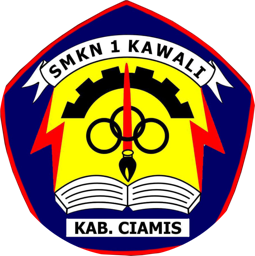
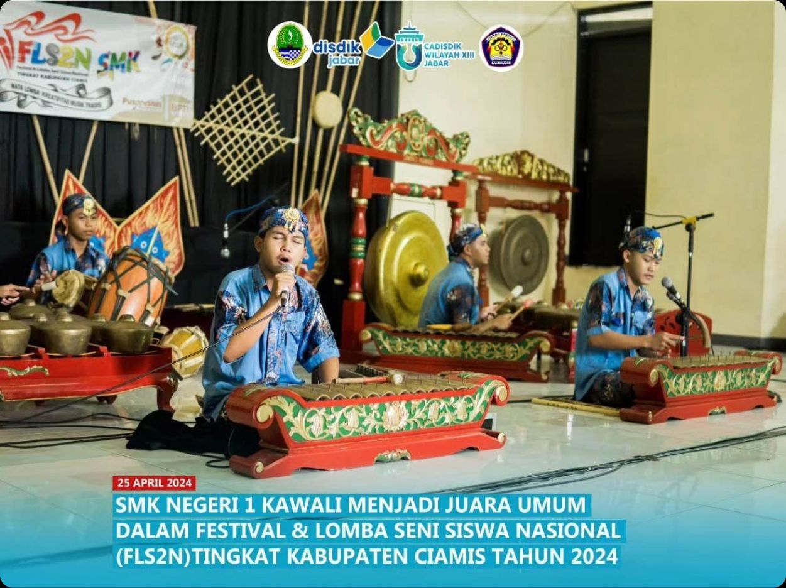

Jurusan Seni Pertunjukan (SP) dan Seni Karawitan (SK) di SMKN 1 Kawali berdiri pada tahun 2016 didirikan oleh Pak Tisno. Awalnya 1 kelas berisi 18 siswa, kini berkembang menjadi 6 kelas dengan jumlah 25-30 siswa per kelas.
Jurusan kami dibimbing oleh tenaga pendidik profesional di bidang seni.